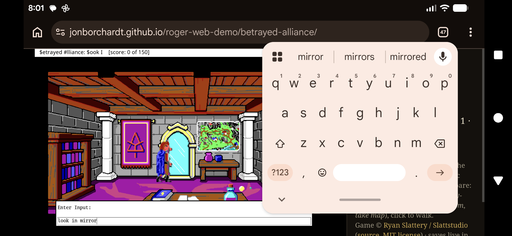

What it is
Roger is a display-layer enhancement inside ScummVM's SCI engine. It runs the original commercial games from their original data and re-renders the backgrounds and sprites at high resolution, while all game logic still runs at the native 320×200 resolution. It is opt-in and, when switched off, the engine behaves byte-for-byte like stock ScummVM.
How it works
Each room's native picture, priority, and control buffers render exactly as SCI always does — so walkability and occlusion "just work." Roger then generates a high-resolution plate from the same SCI resources (an in-engine upscaling pipeline) and composites it, plus upscaled sprites and the game's dialogs, through ScummVM's OSystem overlay. Nothing is pre-shipped as art; it's all derived from the game's own resources at run time.
Press F10 in the demo to cycle Enhanced → Original → Side-by-Side and compare for yourself.
Playing on mobile
The demo runs on phones — hold your device in landscape. Be warned that the experience is not fully optimal: Betrayed Alliance is a keyboard-and-parser adventure built for a desktop. A side action bar gives you the on-screen keyboard plus Menu, Enhanced (F10), and arrow / OK buttons (the game's menu opens with Menu and is navigated with the arrows), and the game shrinks to stay visible above the keyboard.
Tip: use a floating keyboard. The phone keyboard normally docks at the bottom and covers where you type. Most Android keyboards (e.g. Gboard) have a floating mode you can drag aside: open the keyboard, tap the ⋮ / toolbar menu, choose Floating (or Modes → Floating), then move it out of the way. It makes typing commands much more comfortable — as shown here:
